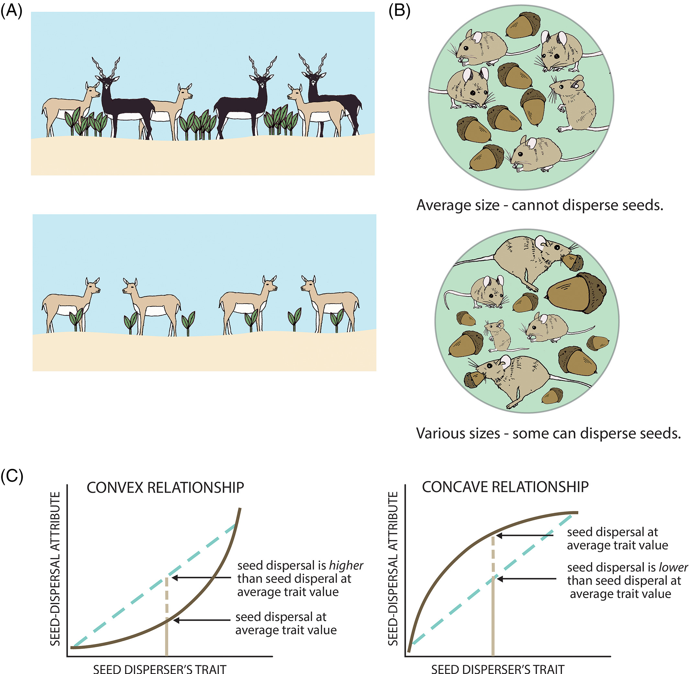
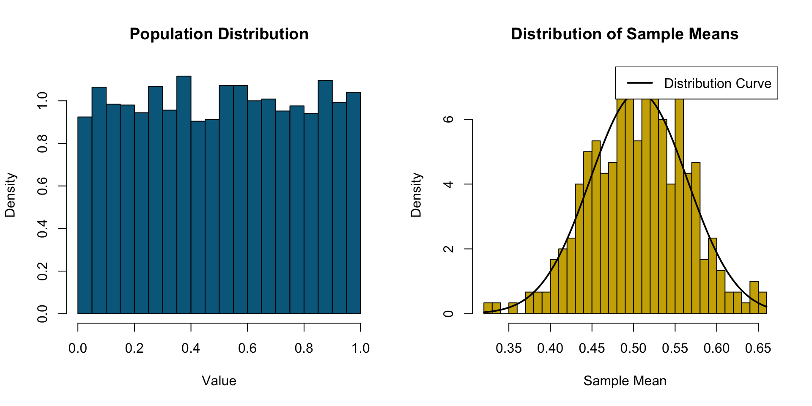
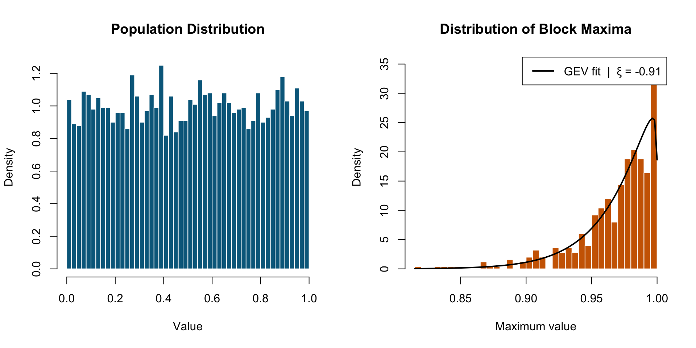
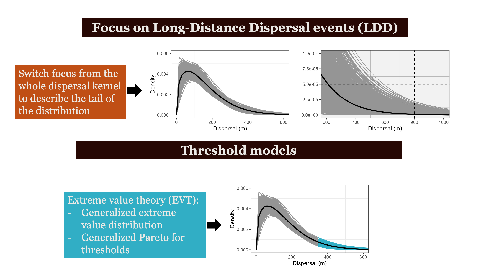
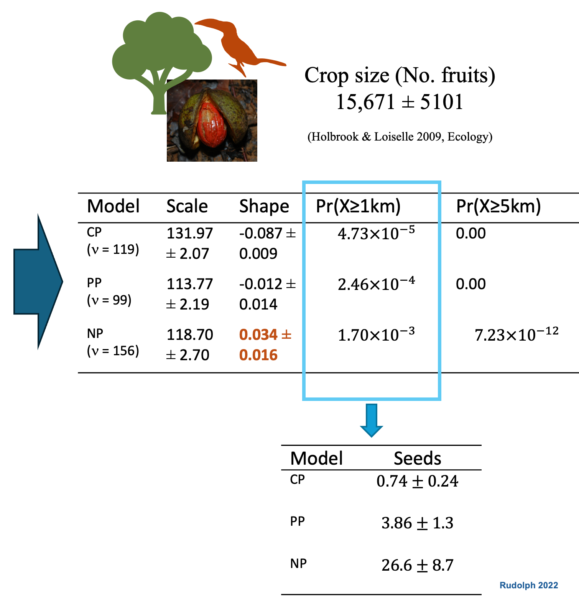
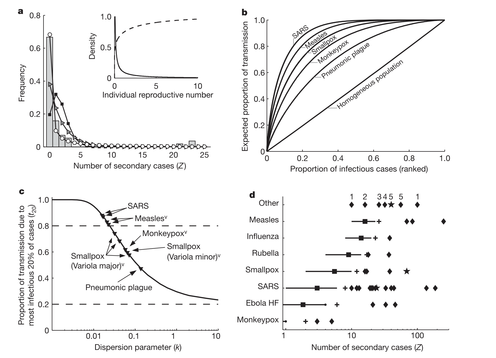

An Extreme Value Theory Approach to Wildlife Disease Transmission
Francisca Javiera Rudolph, PhD
University of Florida George A. Smathers Libraries
One Health Center of Excellence
Averages Hide the Story
Bolnick and colleagues looked across 93 species and found that individual specialization is widespread across taxa - different individuals are doing different things
Focusing on variation among individuals, not species averages, reveals the mechanisms behind seed dispersal outcomes.
Bolnick et al. The American Naturalist 2003

Zwolak. Biological Reviews 2018
The Origin: Aracari & Seed Dispersal
Primary dispersers of Virola trees in Ecuadorian rainforest
Most seeds land close to parent — but rare long-distance events are not that rare when we account for individual variation in movement
Central Limit Theorem (CLT) & Extreme Value Theory (EVT)
The special rules in statistics
CLT = gather data -> take average -> repeat many times
averages are normally distributed

The Central Limit theorem states that the distribution of sample means approaches a normal distribution as the sample size increases, regardless of the population’s original distribution.
Extreme Value Theory states that regardless of the underlying data-generating process, the behavior of extreme observations — the rare, large events in the tail — converges to a Generalized Extreme Value distribution. The tail has its own universal structure.



From Pattern to Process
Individual variation in movement shapes the tail of the dispersal kernel —
and we can use ξ (shape) to see this
The process
Individual frugivores differ in how far they move. Some are homebodies. Some are explorers. That variation is not just noise, it is the mechanism.
The pattern
Pooled models underestimate long-distance dispersal. When individual variation is modeled explicitly, the tail of the seed shadow is fatter — and ξ > 0 confirms it.
The link
ξ is not a fitting artifact. It is a fingerprint of the movement process. The shape of the seed dispersal tail traces back to how individuals move and how we capture variation across individuals.
EVT has offered ecologists a framework for ‘rare’ events like long-distance dispersal since the 1990s — the tools were there before the field was ready to use them.
Gaines& Denny (1993). The largest, smallest, highest, lowest, longest, and shortest: extremes in ecology. Ecology.
Katz et.al. (2005). Statistics of extremes: modeling ecological disturbances. Ecology
Beisel et.al (2007). Testing the extreme value domain of attraction for distributions of beneficial fitness effects. Genetics
Individual Variation in Disease Transmission
“Population-level analyses often use average quantities to describe heterogeneous systems…”
— Lloyd-Smith et al. Nature 2005
Sound familiar?
\(R_0\) is an average. It hides the same individual variation we saw in dispersal kernels:
Most individuals infect zero or one
A few infect many — superspreaders
Individual reproductive number, \(\nu\), as a random variable representing the expected number of secondary cases caused by a particular infected individual.

Same \(R_0\), six different epidemiological worlds.
More heterogeneity means more outbreaks die out, but the ones that don’t are explosive.
k describes the shape of that individual variation, but where does k come from?
What About Disease Ecology?
What Lloyd-Smith et al. 2005 showed
✓ Individual ν (reproductive number) is highly overdispersed
✓ Negative binomial offspring distribution captures heterogeneity
✓ Small dispersion parameter k → superspreading dominates
What they left unanswered
✗ WHY is ν overdispersed in wildlife systems?
✗ Can we predict it BEFORE an outbreak?
Lloyd-Smith et al. Nature 2005
The Answer
Heavy-tailed movement
↓
heavy-tailed contact distribution
↓
heavy-tailed offspring distribution
↓ superspreading
ξ from telemetry data
↓ Predicts k before any outbreak data exist
Movement data as early-warning
for disease outbreak potential
One Framework, Three Scales
Three kernels — each shaped by the tail of the one before:
Individual Movement Kernel
Estimated from GPS telemetry — this is what you can measure today
↓
Pathogen Dispersal Kernel
Movement × contact probability = where transmission occurs
↓
Outbreak Spread Kernel
Population-level dynamics — whether an epidemic stays local or jumps
The EVT shape parameter ξ from tracking data propagates predictive power through the entire cascade